50 profile(s), 443 image(s) — click any photo for full size, use Prev/Next or the arrow keys to move through them
p001
a 36 woman, of Norwegian heritage, high cheekbones, pale skin, long light brown hair, grey eyes, a curvy figure, full lips, arched eyebrows · Prague Czechia · temperament: reserved · framing: candid · spice ceiling: spicy
p001 · reference sheet · per shot: generated / pose / style / backgroundp001 · invented scenes · 2 AI-generated background(s), no real reference photo
p001 · anchorp001 · 01 · a bedroom with an unmade bed · a knit sweaterp001 · 02 · a bathroom mirror · a hoodie and leggings
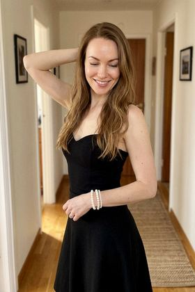
p001 · 03 · a cluttered kitchen · an off-the-shoulder top and jeans · [flirty]p001 · 04 · a couch in a living room · a cardigan and topp001 · 05 · the driver's seat of a car · a turtleneck and jeans
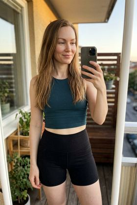
p001 · 06 · a sunny balcony · a cropped gym top and shorts · [spicy]
p002
a 33 woman, of Polish heritage, a wide forehead and narrow chin, warm beige skin, a short bob ash blonde hair, hazel eyes, a slim build, a faint scar through the left eyebrow · Lisbon Portugal · temperament: reserved · framing: candid · spice ceiling: spicy
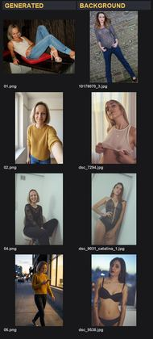
p002 · reference sheet · per shot: generated / pose / style / backgroundp002 · invented scenes · 2 AI-generated background(s), no real reference photo
p002 · anchorp002 · 01 · a bedroom with an unmade bed · an oversized sweater and a skirtp002 · 02 · a bathroom mirror · a jumper and jeansp002 · 03 · a sauna terrace by the water · a fitted sports top and leggings after a workout · [spicy]
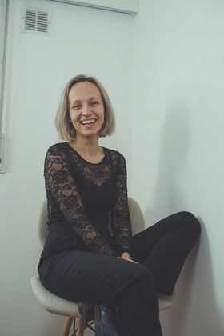
p002 · 04 · a couch in a living room · a denim jacket and topp002 · 05 · the driver's seat of a car · a sweatshirt and cargo trousersp002 · 06 · a hallway mirror · a wrap dress that fits close · [flirty]
p003
a 32 woman, of Brazilian heritage, a wide forehead and narrow chin, light caramel skin, long straight dark brown hair, hazel eyes, a full figure, a small nose, dimples in both cheeks · Lisbon Portugal · temperament: expressive · framing: candid · spice ceiling: spicy
p003 · reference sheet · per shot: generated / pose / style / backgroundp003 · invented scenes · 2 AI-generated background(s), no real reference photo
p003 · anchorp003 · 01 · a bedroom with an unmade bed · a striped top and jeansp003 · 02 · a sauna terrace by the water · a beach cover-up over a swimsuit · [spicy]p003 · 03 · a cluttered kitchen · a blazer over a teep003 · 04 · a couch in a living room · a polo dress
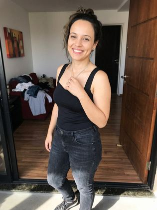
p003 · 05 · the driver's seat of a car · a floral midi dressp003 · 06 · a hallway mirror · a fitted little black going-out dress · [flirty]
p004
a 34 woman, of Polish heritage, a triangular face, fair skin, shoulder-length light brown hair, grey eyes, a lean dancer's build, thick eyebrows · Prague Czechia · temperament: expressive · framing: candid · spice ceiling: spicy
p004 · reference sheet · per shot: generated / pose / style / backgroundp004 · invented scenes · 1 AI-generated background(s), no real reference photo
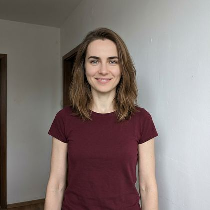
p004 · anchorp004 · 01 · a bedroom with an unmade bed · a blazer over a tee
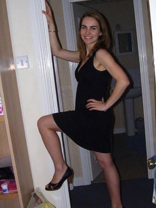
p004 · 02 · a bathroom mirror · a leather jacket over a teep004 · 03 · a cluttered kitchen · a fitted little black going-out dress · [flirty]p004 · 04 · a couch in a living room · a button-up shirt and trousers
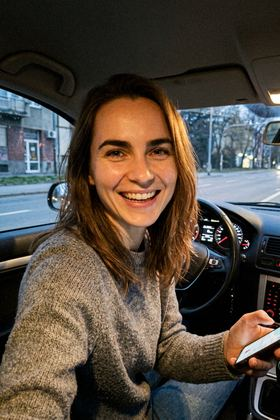
p004 · 05 · the driver's seat of a car · a knit sweaterp004 · 06 · a hallway mirror · a fitted little black going-out dress · [flirty]
p005
a 26 woman, of Polish heritage, a narrow oval face, fair skin, shoulder-length wavy ash blonde hair, hazel eyes, an athletic build, a faint scar through the left eyebrow · Vienna Austria · temperament: expressive · framing: candid · spice ceiling: spicy
p005 · anchorp005 · 01 · a bedroom with an unmade bed · a denim jacket and topp005 · 02 · a bathroom mirror · a sweatshirt and cargo trousersp005 · 03 · a cluttered kitchen · a wrap dress that fits close · [flirty]p005 · 04 · a couch in a living room · an oversized sweater and a skirtp005 · 05 · the driver's seat of a car · a striped top and jeansp005 · 06 · a hallway mirror · athletic leggings and a fitted sports top · [flirty]
p006
a 21 woman, of Polish heritage, a narrow oval face, warm beige skin, shoulder-length auburn hair, hazel eyes, a pear-shaped figure with wider hips, arched eyebrows · Helsinki Finland · temperament: warm · framing: candid · spice ceiling: spicy
p006 · reference sheet · per shot: generated / pose / style / backgroundp006 · invented scenes · 2 AI-generated background(s), no real reference photo
p006 · anchor
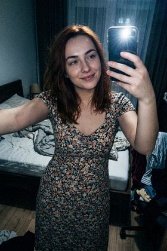
p006 · 01 · a bedroom with an unmade bed · a floral midi dressp006 · 02 · a lakeside jetty in summer · a one-piece swimsuit by the pool · [spicy]p006 · 03 · a cluttered kitchen · a blouse and jeans
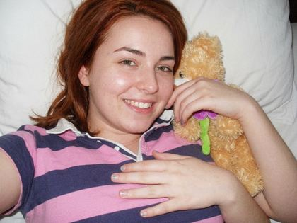
p006 · 04 · a couch in a living room · a jumper and jeans
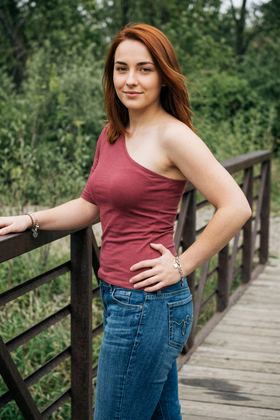
p006 · 05 · the driver's seat of a car · a wrap dress that fits close · [flirty]p006 · 06 · a hallway mirror · a chambray shirt and white jeans
p007
a 22 woman, of Italian heritage, a heart-shaped face, golden-toned skin, long black hair, dark brown eyes, a tall slim frame, clear skin, thick eyebrows · Oslo Norway · temperament: reserved · framing: candid · spice ceiling: spicy
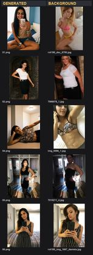
p007 · reference sheet · per shot: generated / pose / style / backgroundp007 · invented scenes · 1 AI-generated background(s), no real reference photo
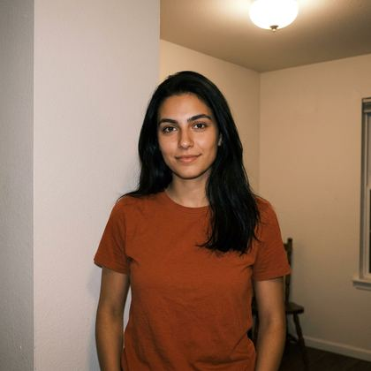
p007 · anchorp007 · 01 · a bedroom with an unmade bed · an oversized sweater and a skirtp007 · 02 · a bathroom mirror · a fitted little black going-out dress · [flirty]
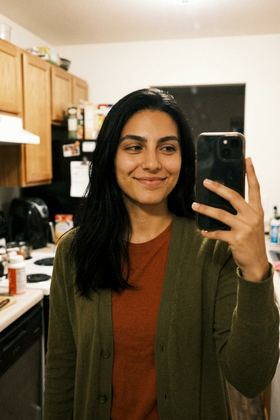
p007 · 03 · a cluttered kitchen · a cardigan and top
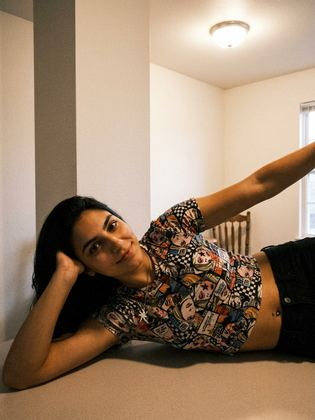
p007 · 04 · a couch in a living room · athletic leggings and a fitted sports top · [flirty]
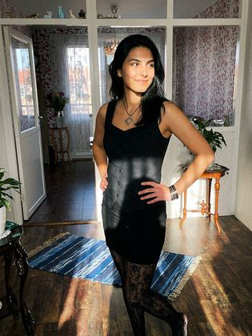
p007 · 05 · the driver's seat of a car · a chambray shirt and white jeansp007 · 06 · a hallway mirror · a striped top and jeans
p008
a 22 woman, of Norwegian heritage, a round face with full cheeks, fair skin, shoulder-length wavy blonde hair, green eyes, a tall slim frame, a small nose, a dimple in the left cheek · Stockholm Sweden · temperament: expressive · framing: candid · spice ceiling: spicy
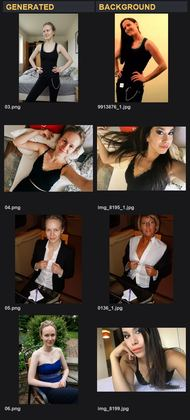
p008 · reference sheet · per shot: generated / pose / style / backgroundp008 · invented scenes · 2 AI-generated background(s), no real reference photo
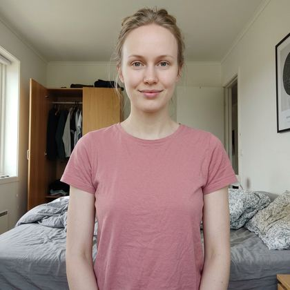
p008 · anchorp008 · 01 · a bedroom with an unmade bed · a blazer over a tee
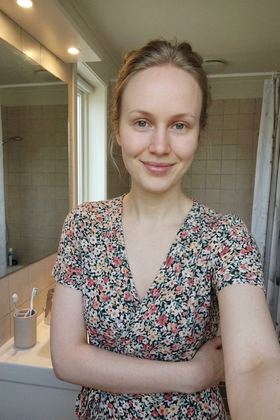
p008 · 02 · a bathroom mirror · a wrap dress
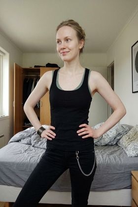
p008 · 03 · a cluttered kitchen · an off-the-shoulder top and jeans · [flirty]
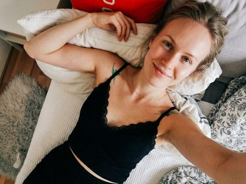
p008 · 04 · a couch in a living room · a jumper and jeans
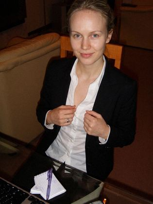
p008 · 05 · the driver's seat of a car · a silk camisole top and tailored trousers · [flirty]p008 · 06 · a hallway mirror · a knit sweater
p009
a 34 woman, of Norwegian heritage, a narrow oval face, ruddy fair skin, tightly coiled ash blonde hair, blue eyes, a short curvy frame, dimples in both cheeks · Lisbon Portugal · temperament: warm · framing: candid · spice ceiling: spicy
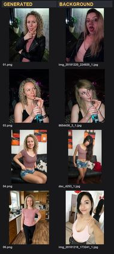
p009 · reference sheet · per shot: generated / pose / style / backgroundp009 · invented scenes · 2 AI-generated background(s), no real reference photo
p009 · anchorp009 · 01 · a bedroom with an unmade bed · a polo dressp009 · 02 · a hotel pool · a one-piece swimsuit by the pool · [spicy]p009 · 03 · a cluttered kitchen · a striped top and jeansp009 · 04 · a couch in a living room · a fitted summer dress with a low back · [flirty]p009 · 05 · the driver's seat of a car · a leather jacket over a tee
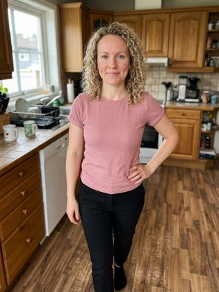
p009 · 06 · a hallway mirror · a hoodie and leggings
p010
a 26 woman, of Norwegian heritage, a broad face, fair skin, long wavy ash blonde hair, hazel eyes, a petite frame, a faint scar through the left eyebrow, dimples in both cheeks · Dublin Ireland · temperament: warm · framing: candid · spice ceiling: spicy
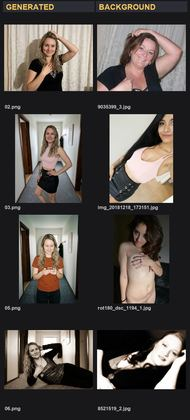
p010 · reference sheet · per shot: generated / pose / style / backgroundp010 · invented scenes · 2 AI-generated background(s), no real reference photo
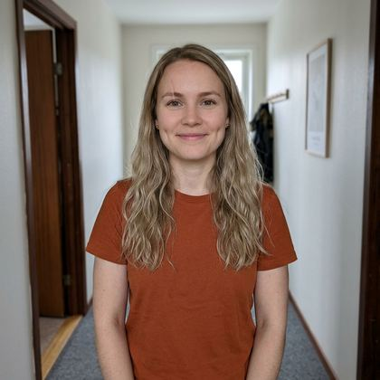
p010 · anchor
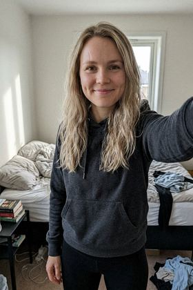
p010 · 01 · a bedroom with an unmade bed · a hoodie and leggings
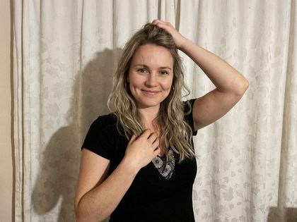
p010 · 02 · a bathroom mirror · a silk camisole top and tailored trousers · [flirty]
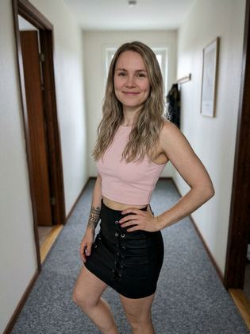
p010 · 03 · a cluttered kitchen · a denim jacket and top
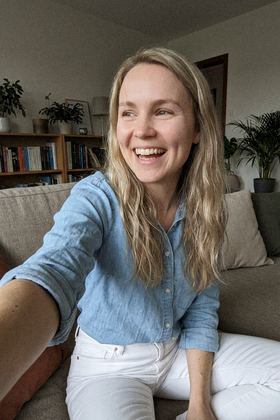
p010 · 04 · a couch in a living room · a chambray shirt and white jeans
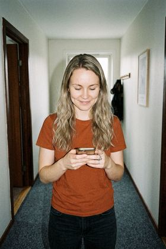
p010 · 05 · the driver's seat of a car · a floral midi dress
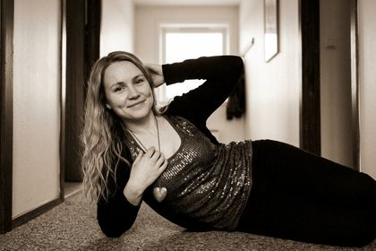
p010 · 06 · a hallway mirror · athletic leggings and a fitted sports top · [flirty]
p011
a 27 woman, of Nigerian heritage, prominent brow and deep-set eyes, medium brown skin, long black hair, deep-set dark eyes, a full figure, thick eyebrows · Amsterdam Netherlands · temperament: reserved · framing: candid · spice ceiling: spicy
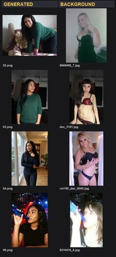
p011 · reference sheet · per shot: generated / pose / style / backgroundp011 · invented scenes · 2 AI-generated background(s), no real reference photo
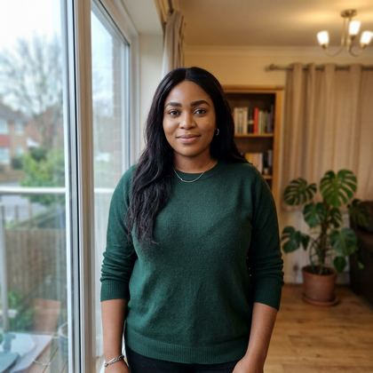
p011 · anchor
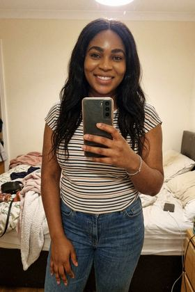
p011 · 01 · a bedroom with an unmade bed · a striped top and jeansp011 · 02 · a bathroom mirror · a blazer over a tee
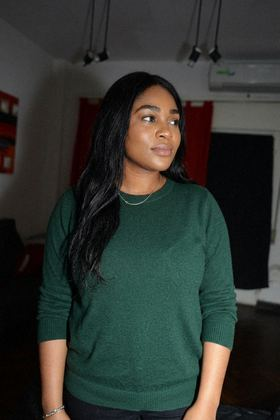
p011 · 03 · a cluttered kitchen · a polo dress
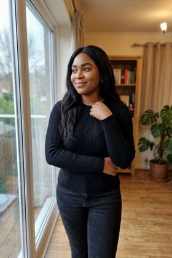
p011 · 04 · a couch in a living room · a cropped knit top and high-waisted jeans · [flirty]p011 · 05 · a hotel pool · a one-piece swimsuit by the pool · [spicy]
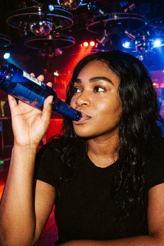
p011 · 06 · a hallway mirror · a sweatshirt and cargo trousers
p012
a 31 woman, of Italian heritage, a wide forehead and narrow chin, olive skin, long chestnut hair, dark brown eyes, a soft dad-bod style figure, defined cheekbones, a dimple in the left cheek · Copenhagen Denmark · temperament: expressive · framing: candid · spice ceiling: spicy
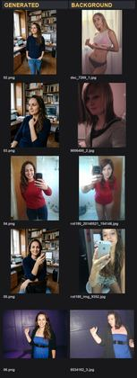
p012 · reference sheet · per shot: generated / pose / style / backgroundp012 · invented scenes · 1 AI-generated background(s), no real reference photo
p012 · anchor
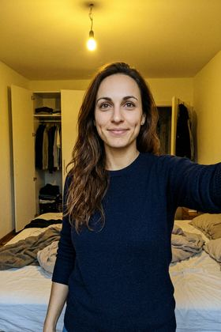
p012 · 01 · a bedroom with an unmade bed · a knit sweaterp012 · 02 · a bathroom mirror · a summer dressp012 · 03 · a cluttered kitchen · a silk camisole top and tailored trousers · [flirty]
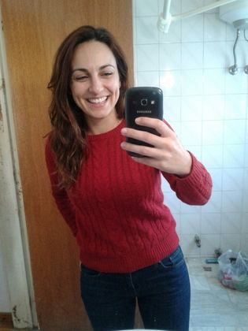
p012 · 04 · a couch in a living room · a denim jacket and topp012 · 05 · the driver's seat of a car · a leather jacket over a teep012 · 06 · a hallway mirror · a wrap dress that fits close · [flirty]
p013
a 37 woman, of Polish heritage, a softly rounded jaw, pale skin, a short bob auburn hair, blue eyes, a voluptuous hourglass figure, dimples in both cheeks · Copenhagen Denmark · temperament: warm · framing: candid · spice ceiling: spicy
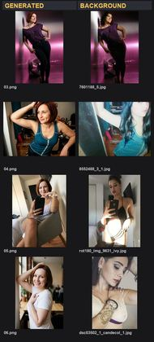
p013 · reference sheet · per shot: generated / pose / style / backgroundp013 · invented scenes · 2 AI-generated background(s), no real reference photo
p013 · anchor
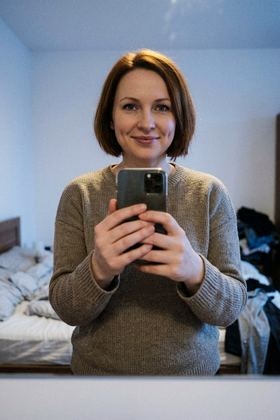
p013 · 01 · a bedroom with an unmade bed · a knit sweaterp013 · 02 · a bathroom mirror · a cardigan and topp013 · 03 · a cluttered kitchen · athletic leggings and a fitted sports top · [flirty]
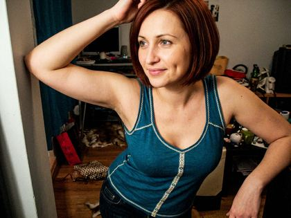
p013 · 04 · a couch in a living room · an off-the-shoulder top and jeans · [flirty]p013 · 05 · the driver's seat of a car · a blouse and jeansp013 · 06 · a hallway mirror · a leather jacket over a tee
p014
a 28 woman, of Polish heritage, fine features, light olive skin, curly dark blonde hair, blue eyes, a soft rounded figure, thick eyebrows · Copenhagen Denmark · temperament: warm · framing: candid · spice ceiling: spicy
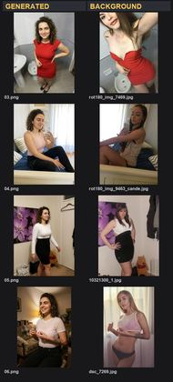
p014 · reference sheet · per shot: generated / pose / style / backgroundp014 · invented scenes · 2 AI-generated background(s), no real reference photo
p014 · anchor
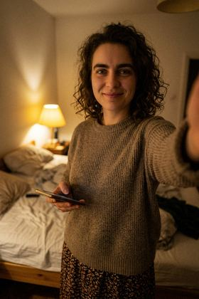
p014 · 01 · a bedroom with an unmade bed · an oversized sweater and a skirt
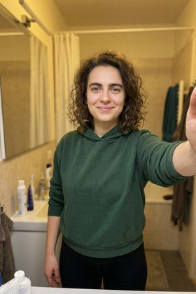
p014 · 02 · a bathroom mirror · a hoodie and leggingsp014 · 03 · a cluttered kitchen · a striped top and jeansp014 · 04 · a couch in a living room · a fitted summer dress with a low back · [flirty]
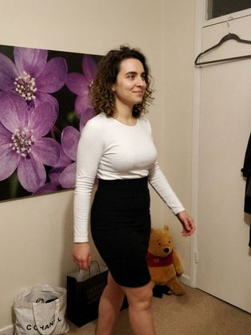
p014 · 05 · the driver's seat of a car · a fitted summer dress with a low back · [flirty]
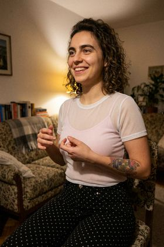
p014 · 06 · a hallway mirror · a chambray shirt and white jeans
p015
a 39 woman, of Ethiopian heritage, a round face, deep brown skin, a short bob dark brown hair, brown eyes, a slim build, a strong jawline · Vienna Austria · temperament: expressive · framing: candid · spice ceiling: spicy
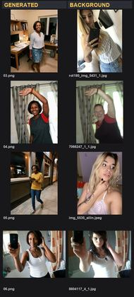
p015 · reference sheet · per shot: generated / pose / style / backgroundp015 · invented scenes · 2 AI-generated background(s), no real reference photo
p015 · anchorp015 · 01 · a bedroom with an unmade bed · a blouse and jeansp015 · 02 · a bathroom mirror · a cardigan and topp015 · 03 · a cluttered kitchen · a wrap dress that fits close · [flirty]p015 · 04 · a couch in a living room · a hoodie and leggingsp015 · 05 · the driver's seat of a car · a knit sweaterp015 · 06 · a hallway mirror · athletic leggings and a fitted sports top · [flirty]
p016
a 26 woman, of Norwegian heritage, a diamond-shaped face, pale skin, pinned-up blonde hair, green eyes, a broad-shouldered frame, a dimple in the left cheek · Dublin Ireland · temperament: warm · framing: candid · spice ceiling: spicy
p016 · anchorp016 · 01 · a bedroom with an unmade bed · an oversized sweater and a skirtp016 · 02 · a bathroom mirror · a knit sweaterp016 · 03 · a cluttered kitchen · a hoodie and leggingsp016 · 04 · a couch in a living room · a cropped knit top and high-waisted jeans · [flirty]p016 · 05 · the driver's seat of a car · a fitted summer dress with a low back · [flirty]p016 · 06 · a hallway mirror · a polo dress
p017
a 28 woman, of Ethiopian heritage, strong angular features, light caramel skin, curly jet black hair, brown eyes, a petite frame, a strong jawline · Dublin Ireland · temperament: reserved · framing: candid · spice ceiling: spicy
p017 · reference sheet · per shot: generated / pose / style / backgroundp017 · invented scenes · 1 AI-generated background(s), no real reference photo
p017 · anchorp017 · 01 · a bedroom with an unmade bed · a cardigan and topp017 · 02 · a bathroom mirror · a wrap dressp017 · 03 · a cluttered kitchen · a cropped knit top and high-waisted jeans · [flirty]p017 · 04 · a couch in a living room · a cropped knit top and high-waisted jeans · [flirty]p017 · 05 · the driver's seat of a car · a t-shirt and skirtp017 · 06 · a hallway mirror · a denim jacket and top
p018
a 40 woman, of Polish heritage, a wide square face, light olive skin, shoulder-length wavy light brown hair, grey eyes, an average build, a small nose · Oslo Norway · temperament: expressive · framing: candid · spice ceiling: spicy
p018 · reference sheet · per shot: generated / pose / style / backgroundp018 · invented scenes · 2 AI-generated background(s), no real reference photo
p018 · anchorp018 · 01 · a bedroom with an unmade bed · an oversized sweater and a skirtp018 · 02 · a bathroom mirror · a fitted little black going-out dress · [flirty]p018 · 03 · a cluttered kitchen · a floral midi dressp018 · 04 · a couch in a living room · a silk camisole top and tailored trousers · [flirty]p018 · 05 · the driver's seat of a car · a t-shirt and skirtp018 · 06 · a hallway mirror · a polo dress
p019
a 35 woman, of Norwegian heritage, a wide square face, pale skin, pinned-up dark blonde hair, grey eyes, an athletic build, defined cheekbones · Oslo Norway · temperament: warm · framing: candid · spice ceiling: spicy
p019 · reference sheet · per shot: generated / pose / style / backgroundp019 · invented scenes · 1 AI-generated background(s), no real reference photo
p019 · anchorp019 · 01 · a bedroom with an unmade bed · a leather jacket over a teep019 · 02 · a bathroom mirror · a summer dressp019 · 03 · a cluttered kitchen · a blouse and jeansp019 · 04 · a couch in a living room · a jumper and jeansp019 · 05 · the driver's seat of a car · a fitted summer dress with a low back · [flirty]p019 · 06 · a hallway mirror · an off-the-shoulder top and jeans · [flirty]
p020
a 32 woman, of Norwegian heritage, prominent brow and deep-set eyes, cool porcelain skin, long straight ash blonde hair, grey eyes, a slim build, arched eyebrows, defined cheekbones · Amsterdam Netherlands · temperament: expressive · framing: candid · spice ceiling: spicy
p020 · reference sheet · per shot: generated / pose / style / backgroundp020 · invented scenes · 1 AI-generated background(s), no real reference photo
p020 · anchorp020 · 01 · a bedroom with an unmade bed · a sweatshirt and cargo trousersp020 · 02 · a bathroom mirror · a wrap dressp020 · 03 · a gym · a cropped gym top and shorts · [spicy]p020 · 04 · a couch in a living room · a floral midi dressp020 · 05 · the driver's seat of a car · a turtleneck and jeansp020 · 06 · a hallway mirror · an off-the-shoulder top and jeans · [flirty]
p021
a 30 woman, of Norwegian heritage, a long narrow face, pale skin, a blunt fringe and long blonde hair, hazel eyes, a tall slim frame, full lips · Dublin Ireland · temperament: reserved · framing: candid · spice ceiling: spicy
p021 · reference sheet · per shot: generated / pose / style / backgroundp021 · invented scenes · 2 AI-generated background(s), no real reference photo
p021 · anchorp021 · 01 · a bedroom with an unmade bed · a hoodie and leggingsp021 · 02 · a sauna terrace by the water · a fitted sports top and leggings after a workout · [spicy]p021 · 03 · a cluttered kitchen · a polo dressp021 · 04 · a couch in a living room · an off-the-shoulder top and jeans · [flirty]p021 · 05 · the driver's seat of a car · a denim jacket and topp021 · 06 · a hallway mirror · a cardigan and top
p022
a 28 woman, of Norwegian heritage, fine features, fair skin, shoulder-length wavy light brown hair, hazel eyes, an average build, a dimple in the left cheek · Vienna Austria · temperament: warm · framing: candid · spice ceiling: spicy
p022 · reference sheet · per shot: generated / pose / style / backgroundp022 · invented scenes · 1 AI-generated background(s), no real reference photo
p022 · anchorp022 · 01 · a bedroom with an unmade bed · a hoodie and leggingsp022 · 02 · a bathroom mirror · a button-up shirt and trousersp022 · 03 · a cluttered kitchen · a casual top and jeansp022 · 04 · a couch in a living room · athletic leggings and a fitted sports top · [flirty]p022 · 05 · the driver's seat of a car · athletic leggings and a fitted sports top · [flirty]p022 · 06 · a hallway mirror · a t-shirt and skirt
p023
a 41 woman, of Nigerian heritage, a softly rounded jaw, medium brown skin, pinned-up dark brown hair, dark brown eyes, a petite frame, a cleft chin · Stockholm Sweden · temperament: warm · framing: candid · spice ceiling: spicy
p023 · reference sheet · per shot: generated / pose / style / backgroundp023 · invented scenes · 1 AI-generated background(s), no real reference photo
p023 · anchorp023 · 01 · a bedroom with an unmade bed · a jumper and jeansp023 · 02 · a bathroom mirror · a t-shirt and skirtp023 · 03 · a cluttered kitchen · an off-the-shoulder top and jeans · [flirty]p023 · 04 · a couch in a living room · a wrap dressp023 · 05 · the driver's seat of a car · a casual top and jeansp023 · 06 · a hallway mirror · a fitted little black going-out dress · [flirty]
p024
a 23 woman, of Norwegian heritage, soft delicate features, fair skin, long straight platinum blonde hair, blue-grey eyes, a slim build, a dimple in the left cheek, thick eyebrows · Helsinki Finland · temperament: reserved · framing: candid · spice ceiling: spicy
p024 · reference sheet · per shot: generated / pose / style / backgroundp024 · invented scenes · 2 AI-generated background(s), no real reference photo
p024 · anchorp024 · 01 · a bedroom with an unmade bed · a polo dressp024 · 02 · a bathroom mirror · a t-shirt and skirtp024 · 03 · a cluttered kitchen · a fitted little black going-out dress · [flirty]p024 · 04 · a couch in a living room · a blazer over a teep024 · 05 · the driver's seat of a car · an oversized sweater and a skirtp024 · 06 · a lakeside jetty in summer · a one-piece swimsuit by the pool · [spicy]
p025
a 22 woman, of Polish heritage, a long narrow face, fair skin, long straight dark brown hair, blue eyes, an athletic build, clear skin · Helsinki Finland · temperament: warm · framing: candid · spice ceiling: spicy
p025 · reference sheet · per shot: generated / pose / style / backgroundp025 · invented scenes · 2 AI-generated background(s), no real reference photo
p025 · anchorp025 · 01 · a bedroom with an unmade bed · a blazer over a teep025 · 02 · a bathroom mirror · a casual top and jeansp025 · 03 · a cluttered kitchen · a blouse and jeansp025 · 04 · a couch in a living room · an oversized sweater and a skirtp025 · 05 · the driver's seat of a car · a cropped knit top and high-waisted jeans · [flirty]p025 · 06 · a lakeside jetty in summer · a fitted sports top and leggings after a workout · [spicy]
p026
a 42 woman, of Italian heritage, a long narrow face, olive skin, pinned-up black hair, dark brown eyes, a slim build, clear skin · Amsterdam Netherlands · temperament: expressive · framing: candid · spice ceiling: spicy
p026 · anchorp026 · 01 · a bedroom with an unmade bed · a t-shirt and skirtp026 · 02 · a bathroom mirror · a casual top and jeansp026 · 03 · a cluttered kitchen · a knit sweaterp026 · 04 · a couch in a living room · a wrap dress that fits close · [flirty]p026 · 05 · the driver's seat of a car · a silk camisole top and tailored trousers · [flirty]p026 · 06 · a hallway mirror · a jumper and jeans
p027
a 21 woman, of Norwegian heritage, high cheekbones, fair skin, long straight dark blonde hair, green eyes, an athletic build, a cleft chin, a strong jawline · Berlin Germany · temperament: warm · framing: candid · spice ceiling: spicy
p027 · anchorp027 · 01 · a bedroom with an unmade bed · a jumper and jeansp027 · 02 · a bathroom mirror · a t-shirt and skirtp027 · 03 · a cluttered kitchen · a hoodie and leggingsp027 · 04 · a couch in a living room · a cropped knit top and high-waisted jeans · [flirty]p027 · 05 · the driver's seat of a car · an off-the-shoulder top and jeans · [flirty]p027 · 06 · a hallway mirror · a denim jacket and top
p028
a 30 woman, of Polish heritage, a square jaw, fair skin, curly auburn hair, light brown eyes, a tall slim frame, a strong jawline · Berlin Germany · temperament: reserved · framing: candid · spice ceiling: spicy
p028 · reference sheet · per shot: generated / pose / style / backgroundp028 · invented scenes · 2 AI-generated background(s), no real reference photo
p028 · anchorp028 · 01 · a bedroom with an unmade bed · a knit sweaterp028 · 02 · a bathroom mirror · a blouse and jeansp028 · 03 · a cluttered kitchen · a leather jacket over a teep028 · 04 · a couch in a living room · a silk camisole top and tailored trousers · [flirty]p028 · 05 · the driver's seat of a car · a floral midi dressp028 · 06 · a hotel pool · a cropped gym top and shorts · [spicy]
p029
a 23 woman, of Italian heritage, prominent brow and deep-set eyes, tanned skin, curly dark brown hair, hazel eyes, a voluptuous hourglass figure, a cleft chin · Milan Italy · temperament: expressive · framing: candid · spice ceiling: spicy
p029 · reference sheet · per shot: generated / pose / style / backgroundp029 · invented scenes · 1 AI-generated background(s), no real reference photo
p029 · anchorp029 · 01 · a bedroom with an unmade bed · a blouse and jeansp029 · 02 · a bathroom mirror · a wrap dressp029 · 03 · a cluttered kitchen · a casual top and jeansp029 · 04 · a couch in a living room · an off-the-shoulder top and jeans · [flirty]p029 · 05 · the driver's seat of a car · a wrap dress that fits close · [flirty]p029 · 06 · a hallway mirror · a cardigan and top
p030
a 40 woman, of Polish heritage, a long face with a pointed chin, fair skin, tightly coiled light brown hair, hazel eyes, a full figure, full lips, dimples in both cheeks · Oslo Norway · temperament: reserved · framing: candid · spice ceiling: spicy
p030 · reference sheet · per shot: generated / pose / style / backgroundp030 · invented scenes · 2 AI-generated background(s), no real reference photo
p030 · anchorp030 · 01 · a bedroom with an unmade bed · a hoodie and leggingsp030 · 02 · a bathroom mirror · a sweatshirt and cargo trousersp030 · 03 · a cluttered kitchen · a blouse and jeansp030 · 04 · a couch in a living room · a jumper and jeansp030 · 05 · the driver's seat of a car · athletic leggings and a fitted sports top · [flirty]p030 · 06 · a hallway mirror · a cropped knit top and high-waisted jeans · [flirty]
p031
a 27 woman, of Italian heritage, fine features, tanned skin, tightly coiled reddish brown hair, green-hazel eyes, an average build, a cleft chin, clear skin · Stockholm Sweden · temperament: warm · framing: candid · spice ceiling: spicy
p031 · reference sheet · per shot: generated / pose / style / backgroundp031 · invented scenes · 2 AI-generated background(s), no real reference photo
p031 · anchorp031 · 01 · a bedroom with an unmade bed · a denim jacket and topp031 · 02 · a bathroom mirror · a cardigan and topp031 · 03 · a cluttered kitchen · a cropped knit top and high-waisted jeans · [flirty]p031 · 04 · a couch in a living room · a polo dressp031 · 05 · a lakeside jetty in summer · a fitted sports top and leggings after a workout · [spicy]p031 · 06 · a hallway mirror · a blouse and jeans
p032
a 36 woman, of Polish heritage, a round face with full cheeks, warm beige skin, curly dark brown hair, grey eyes, a willowy lean frame, a warm friendly face, a dimple in the left cheek · Amsterdam Netherlands · temperament: warm · framing: candid · spice ceiling: spicy
p032 · anchorp032 · 01 · a bedroom with an unmade bed · a striped top and jeansp032 · 02 · a bathroom mirror · a polo dressp032 · 03 · a cluttered kitchen · a silk camisole top and tailored trousers · [flirty]p032 · 04 · a couch in a living room · a button-up shirt and trousersp032 · 05 · the driver's seat of a car · an off-the-shoulder top and jeans · [flirty]p032 · 06 · a hallway mirror · a leather jacket over a tee
p033
a 35 woman, of Indian heritage, a long face with a pointed chin, medium brown skin, tightly coiled black hair, dark brown eyes, an average build, a cleft chin · Vienna Austria · temperament: expressive · framing: candid · spice ceiling: spicy
p033 · reference sheet · per shot: generated / pose / style / backgroundp033 · invented scenes · 1 AI-generated background(s), no real reference photo
p033 · anchorp033 · 01 · a bedroom with an unmade bed · a leather jacket over a teep033 · 02 · a bathroom mirror · a blouse and jeansp033 · 03 · a cluttered kitchen · a hoodie and leggingsp033 · 04 · a couch in a living room · a wrap dress that fits close · [flirty]p033 · 05 · the driver's seat of a car · athletic leggings and a fitted sports top · [flirty]p033 · 06 · a hallway mirror · a knit sweater
p034
a 41 woman, of Italian heritage, an oval face, golden-toned skin, pinned-up black hair, hazel eyes, a soft dad-bod style figure, a warm friendly face, a small nose · Copenhagen Denmark · temperament: reserved · framing: candid · spice ceiling: spicy
p034 · reference sheet · per shot: generated / pose / style / backgroundp034 · invented scenes · 2 AI-generated background(s), no real reference photo
p034 · anchorp034 · 01 · a bedroom with an unmade bed · a wrap dressp034 · 02 · a bathroom mirror · a leather jacket over a teep034 · 03 · a cluttered kitchen · a casual top and jeansp034 · 04 · a couch in a living room · a sweatshirt and cargo trousersp034 · 05 · the driver's seat of a car · a wrap dress that fits close · [flirty]p034 · 06 · a lakeside jetty in summer · a beach cover-up over a swimsuit · [spicy]
p035
a 21 woman, of Norwegian heritage, a wide forehead and narrow chin, cool porcelain skin, a short bob ash blonde hair, blue-grey eyes, a soft rounded figure, arched eyebrows · Copenhagen Denmark · temperament: warm · framing: candid · spice ceiling: spicy
p035 · reference sheet · per shot: generated / pose / style / backgroundp035 · invented scenes · 1 AI-generated background(s), no real reference photo
p035 · anchorp035 · 01 · a bedroom with an unmade bed · a blazer over a teep035 · 02 · a bathroom mirror · a summer dressp035 · 03 · a sandy beach on a hot day · a cropped gym top and shorts · [spicy]p035 · 04 · a couch in a living room · a polo dressp035 · 05 · the driver's seat of a car · athletic leggings and a fitted sports top · [flirty]p035 · 06 · a hallway mirror · a floral midi dress
p036
a 25 woman, of Nigerian heritage, a long face with a pointed chin, medium brown skin, shoulder-length black hair, dark brown eyes, a voluptuous hourglass figure, defined cheekbones, arched eyebrows · Barcelona Spain · temperament: warm · framing: candid · spice ceiling: spicy
p036 · reference sheet · per shot: generated / pose / style / backgroundp036 · invented scenes · 2 AI-generated background(s), no real reference photo
p036 · anchorp036 · 01 · a bedroom with an unmade bed · a wrap dressp036 · 02 · a bathroom mirror · a t-shirt and skirtp036 · 03 · a cluttered kitchen · athletic leggings and a fitted sports top · [flirty]p036 · 04 · a couch in a living room · a polo dressp036 · 05 · the driver's seat of a car · a fitted summer dress with a low back · [flirty]p036 · 06 · a hallway mirror · a denim jacket and top
p037
a 29 woman, of Indian heritage, a square jaw, medium brown skin, a blunt fringe and long black hair, amber eyes, a slim build, a strong jawline, a warm friendly face · Oslo Norway · temperament: expressive · framing: candid · spice ceiling: spicy
p037 · reference sheet · per shot: generated / pose / style / backgroundp037 · invented scenes · 1 AI-generated background(s), no real reference photo
p037 · anchorp037 · 01 · a bedroom with an unmade bed · a t-shirt and skirtp037 · 02 · a bathroom mirror · a summer dressp037 · 03 · a sandy beach on a hot day · a beach cover-up over a swimsuit · [spicy]p037 · 04 · a couch in a living room · an oversized sweater and a skirtp037 · 05 · the driver's seat of a car · a cropped knit top and high-waisted jeans · [flirty]p037 · 06 · a hallway mirror · a floral midi dress
p038
a 40 woman, of Polish heritage, a square jaw, warm beige skin, a short bob dark blonde hair, grey eyes, a curvy figure, full lips, arched eyebrows · Berlin Germany · temperament: expressive · framing: candid · spice ceiling: spicy
p038 · reference sheet · per shot: generated / pose / style / backgroundp038 · invented scenes · 1 AI-generated background(s), no real reference photo
p038 · anchorp038 · 01 · a bedroom with an unmade bed · a chambray shirt and white jeansp038 · 02 · a bathroom mirror · a cardigan and topp038 · 03 · a cluttered kitchen · a polo dressp038 · 04 · a couch in a living room · a jumper and jeansp038 · 05 · the driver's seat of a car · a fitted summer dress with a low back · [flirty]p038 · 06 · a hallway mirror · a fitted summer dress with a low back · [flirty]
p039
a 38 woman, of Norwegian heritage, a round face, ruddy fair skin, long straight ash blonde hair, green eyes, a voluptuous hourglass figure, thick eyebrows, clear skin · Barcelona Spain · temperament: expressive · framing: candid · spice ceiling: spicy
p039 · reference sheet · per shot: generated / pose / style / backgroundp039 · invented scenes · 2 AI-generated background(s), no real reference photo
p039 · anchorp039 · 01 · a bedroom with an unmade bed · a cardigan and topp039 · 02 · a bathroom mirror · a polo dressp039 · 03 · a sunny balcony · a one-piece swimsuit by the pool · [spicy]p039 · 04 · a couch in a living room · a chambray shirt and white jeansp039 · 05 · the driver's seat of a car · a summer dressp039 · 06 · a hallway mirror · a fitted little black going-out dress · [flirty]
p040
a 33 woman, of Norwegian heritage, prominent brow and deep-set eyes, ruddy fair skin, long wavy blonde hair, green eyes, a heavyset figure with a wide waist and full hips, deep-set eyes · Lisbon Portugal · temperament: expressive · framing: candid · spice ceiling: spicy
p040 · reference sheet · per shot: generated / pose / style / backgroundp040 · invented scenes · 1 AI-generated background(s), no real reference photo
p040 · anchorp040 · 01 · a bedroom with an unmade bed · a floral midi dressp040 · 02 · a bathroom mirror · a knit sweaterp040 · 03 · a cluttered kitchen · a hoodie and leggingsp040 · 04 · a couch in a living room · a cardigan and topp040 · 05 · the driver's seat of a car · a fitted summer dress with a low back · [flirty]p040 · 06 · a sauna terrace by the water · a beach cover-up over a swimsuit · [spicy]
p041
a 25 woman, of Nigerian heritage, a broad face, deep brown skin, long black hair, brown eyes, a soft rounded figure, a warm friendly face · Barcelona Spain · temperament: warm · framing: candid · spice ceiling: spicy
p041 · reference sheet · per shot: generated / pose / style / backgroundp041 · invented scenes · 1 AI-generated background(s), no real reference photo
p041 · anchorp041 · 01 · a bedroom with an unmade bed · a denim jacket and topp041 · 02 · a bathroom mirror · a wrap dressp041 · 03 · a cluttered kitchen · a cropped knit top and high-waisted jeans · [flirty]p041 · 04 · a couch in a living room · a jumper and jeansp041 · 05 · the driver's seat of a car · a silk camisole top and tailored trousers · [flirty]p041 · 06 · a hallway mirror · a striped top and jeans
p042
a 41 woman, of Italian heritage, a long narrow face, golden-toned skin, pinned-up chestnut hair, green-hazel eyes, an average build, a small nose · Barcelona Spain · temperament: reserved · framing: candid · spice ceiling: spicy
p042 · reference sheet · per shot: generated / pose / style / backgroundp042 · invented scenes · 2 AI-generated background(s), no real reference photo
p042 · anchorp042 · 01 · a bedroom with an unmade bed · a turtleneck and jeansp042 · 02 · a bathroom mirror · an oversized sweater and a skirtp042 · 03 · a cluttered kitchen · a blouse and jeansp042 · 04 · a hotel pool · a one-piece swimsuit by the pool · [spicy]p042 · 05 · the driver's seat of a car · a hoodie and leggingsp042 · 06 · a hallway mirror · a silk camisole top and tailored trousers · [flirty]
p043
a 25 woman, of Norwegian heritage, an oblong face, fair skin, curly ash blonde hair, blue eyes, a curvy figure, a strong jawline · Amsterdam Netherlands · temperament: reserved · framing: candid · spice ceiling: spicy
p043 · reference sheet · per shot: generated / pose / style / backgroundp043 · invented scenes · 2 AI-generated background(s), no real reference photo
p043 · anchorp043 · 01 · a bedroom with an unmade bed · a jumper and jeansp043 · 02 · a bathroom mirror · a button-up shirt and trousersp043 · 03 · a cluttered kitchen · a leather jacket over a teep043 · 04 · a couch in a living room · a fitted little black going-out dress · [flirty]p043 · 05 · the driver's seat of a car · a striped top and jeansp043 · 06 · a hotel pool · a cropped gym top and shorts · [spicy]
p044
a 37 woman, of Polish heritage, prominent brow and deep-set eyes, pale skin, long auburn hair, hazel eyes, a petite frame, dimples in both cheeks · Berlin Germany · temperament: warm · framing: candid · spice ceiling: spicy
p044 · reference sheet · per shot: generated / pose / style / backgroundp044 · invented scenes · 2 AI-generated background(s), no real reference photo
p044 · anchorp044 · 01 · a bedroom with an unmade bed · a casual top and jeansp044 · 02 · a bathroom mirror · a polo dressp044 · 03 · a cluttered kitchen · a blazer over a teep044 · 04 · a couch in a living room · athletic leggings and a fitted sports top · [flirty]p044 · 05 · the driver's seat of a car · a silk camisole top and tailored trousers · [flirty]p044 · 06 · a hallway mirror · a summer dress
p045
a 26 woman, of Italian heritage, a round face, tanned skin, a short bob black hair, dark brown eyes, a compact sturdy build, a small nose, defined cheekbones · Barcelona Spain · temperament: reserved · framing: candid · spice ceiling: spicy
p045 · anchorp045 · 01 · a bedroom with an unmade bed · a turtleneck and jeansp045 · 02 · a bathroom mirror · a sweatshirt and cargo trousersp045 · 03 · a cluttered kitchen · a t-shirt and skirtp045 · 04 · a couch in a living room · a cropped knit top and high-waisted jeans · [flirty]p045 · 05 · the driver's seat of a car · a blouse and jeansp045 · 06 · a hallway mirror · a cropped knit top and high-waisted jeans · [flirty]
p046
a 29 woman, of Polish heritage, strong angular features, pale skin, a blunt fringe and long dark blonde hair, hazel eyes, an athletic build, a small nose, thick eyebrows · Prague Czechia · temperament: reserved · framing: candid · spice ceiling: spicy
p046 · reference sheet · per shot: generated / pose / style / backgroundp046 · invented scenes · 2 AI-generated background(s), no real reference photo
p046 · anchorp046 · 01 · a bedroom with an unmade bed · a leather jacket over a teep046 · 02 · a bathroom mirror · a cropped knit top and high-waisted jeans · [flirty]p046 · 03 · a sunny balcony · a cropped gym top and shorts · [spicy]p046 · 04 · a couch in a living room · a polo dressp046 · 05 · the driver's seat of a car · a knit sweaterp046 · 06 · a hallway mirror · a cardigan and top
p047
a 25 woman, of Polish heritage, a heart-shaped face, light olive skin, long ash blonde hair, blue eyes, a slightly heavyset figure, clear skin · Helsinki Finland · temperament: warm · framing: candid · spice ceiling: spicy
p047 · anchorp047 · 01 · a bedroom with an unmade bed · a hoodie and leggingsp047 · 02 · a bathroom mirror · a polo dressp047 · 03 · a cluttered kitchen · a summer dressp047 · 04 · a couch in a living room · a fitted summer dress with a low back · [flirty]p047 · 05 · the driver's seat of a car · a fitted little black going-out dress · [flirty]p047 · 06 · a hallway mirror · a chambray shirt and white jeans
p048
a 21 woman, of Norwegian heritage, a triangular face, fair skin, a short bob blonde hair, hazel eyes, an athletic build, full lips · Helsinki Finland · temperament: expressive · framing: candid · spice ceiling: spicy
p048 · reference sheet · per shot: generated / pose / style / backgroundp048 · invented scenes · 2 AI-generated background(s), no real reference photo
p048 · anchorp048 · 01 · a bedroom with an unmade bed · a knit sweaterp048 · 02 · a bathroom mirror · a leather jacket over a teep048 · 03 · a cluttered kitchen · athletic leggings and a fitted sports top · [flirty]p048 · 04 · a couch in a living room · a jumper and jeansp048 · 05 · a sunny balcony · a cropped gym top and shorts · [spicy]p048 · 06 · a hallway mirror · a cardigan and top
p049
a 41 woman, of Italian heritage, a round face, olive skin, a blunt fringe and long chestnut hair, hazel eyes, a compact sturdy build, clear skin · Barcelona Spain · temperament: expressive · framing: candid · spice ceiling: spicy
p049 · reference sheet · per shot: generated / pose / style / backgroundp049 · invented scenes · 1 AI-generated background(s), no real reference photo
p049 · anchorp049 · 01 · a bedroom with an unmade bed · a cardigan and topp049 · 02 · a bathroom mirror · a wrap dress that fits close · [flirty]p049 · 03 · a cluttered kitchen · a chambray shirt and white jeansp049 · 04 · a couch in a living room · a blazer over a teep049 · 05 · the driver's seat of a car · a knit sweaterp049 · 06 · a hotel pool · a beach cover-up over a swimsuit · [spicy]
p050
a 28 woman, of Nigerian heritage, strong angular features, deep brown skin, a blunt fringe and long dark brown hair, brown eyes, an average build, a faint scar through the left eyebrow · Stockholm Sweden · temperament: warm · framing: candid · spice ceiling: spicy
p050 · reference sheet · per shot: generated / pose / style / backgroundp050 · invented scenes · 2 AI-generated background(s), no real reference photo
p050 · anchorp050 · 01 · a bedroom with an unmade bed · a button-up shirt and trousersp050 · 02 · a hotel pool · a cropped gym top and shorts · [spicy]p050 · 03 · a cluttered kitchen · a denim jacket and topp050 · 04 · a couch in a living room · a sweatshirt and cargo trousersp050 · 05 · the driver's seat of a car · athletic leggings and a fitted sports top · [flirty]p050 · 06 · a hallway mirror · a polo dress
Prev / Next or ← / → to browse · +/− or click the image to zoom, 0 to reset · Esc or click outside to close